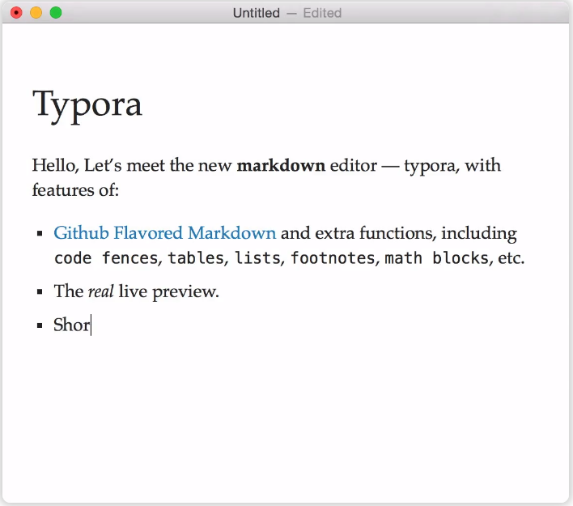
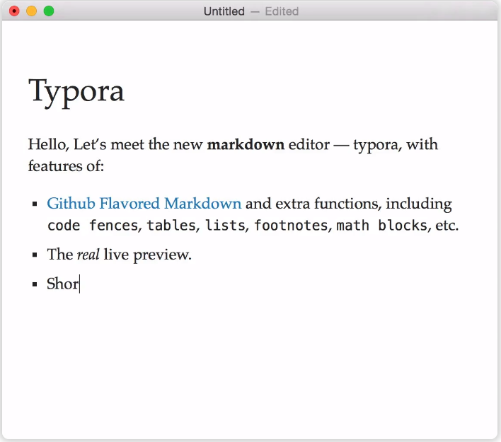

安装typora
Typora是一款Markdown的编写器，汉意为错别字。它内部可以使用Markdown语法来写文章，Typora给人既是读者又是作家的无缝体验。它删除预览窗口，模式切换器，降价源代码的语法符号以及所有其他不必要的干扰。相反，它提供了真正的实时预览功能，可帮助您专注于内容本身。

下载地址typora
Typora是一款Markdown的编写器，汉意为错别字。它内部可以使用Markdown语法来写文章，Typora给人既是读者又是作家的无缝体验。它删除预览窗口，模式切换器，降价源代码的语法符号以及所有其他不必要的干扰。相反，它提供了真正的实时预览功能，可帮助您专注于内容本身。

下载地址typora